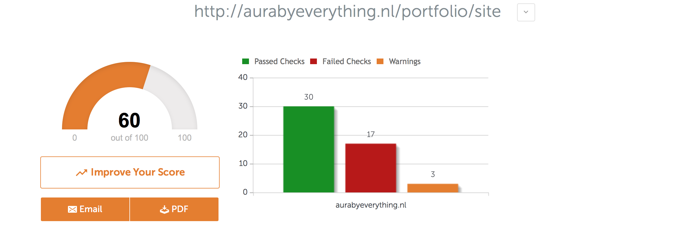
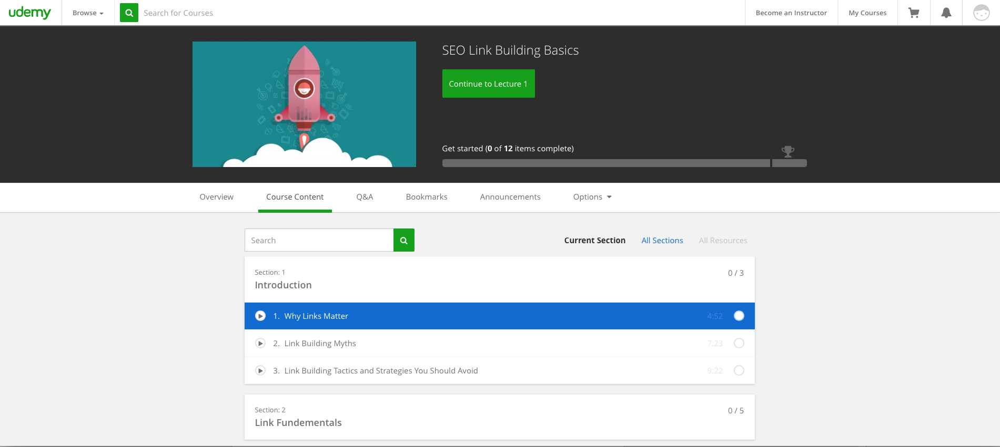

Hier kunt u mijn keuzes en werkzaamheden voor het leerdoel SEO terug lezen.
Ik ben eerste begonnen met 2 twee cursussen om SEO beter te snappen. Verder heb Ik de workshop SEO gevolgd. Ik ga komende semester geen stage lopen en dus ik ben alleen bezig met mijn leerportfolio en die wil ik niet op hoog krijgen in “search results” Dus ik heb voor mij oude portfolio gekozen van semester 3. Ik ben gaan kijken wat ik kan doen om betere resultaten te krijgen dus ik heb een SEO check-up gedaan.
Reflectie
Omdat ik nog geen portfolio wil publiceren vind ik het moeilijk om nog iets te doen voor SEO. Mijn fotografie portfolio is de enige portfolio die wordt gebruik om we werk te tonen. Alle andere portfolio’s zijn voor school. Voor mijn fotografie website maak ik gebruik van Wordpress. Wordpress heeft plugins die je SEO verbeterd die wil ik niet gebruiken. De website die ik gekozen heb is mijn persoonlijke portfolio voor school. Deze stond online voor semester 3, maar ik had nog niet gekeken naar het SEO-gedeelte. Het werd hoog tijd om hierop SEO uit te voeren. Tijdens de workshop heb ik aantekeningen gemaakt. Deze punten heb ik een lijst gezet en die vervolgens naast mijn website te houden om te kijken wat ik al had. Zo ben ik begonnen met het verbeteren van mijn SEO door deze punten door te lopen en kijken wat ik aan kon doen. Vervolgens heb ik een check uitgevoerd op seositecheckup.com om te kijken wat daaruit kwam. Mijn eerste score was 60 want ik had nog een paar errors en warnings staan. Nog niet goed maar ik had minder verwacht. Ik las de fouten die de check aangaf en ik schrok eigenlijk van de complexe fouten die de checker aangaf. Ik begon met de makkelijkste op te lossen fouten zoals page description en keywords. Uit deze tool kwamen ook twee punten die belangrijk waren om toe te voegen. Zoals een robots.txt bestand en een sitemap.xml bestand. Na robots.txt en sitemap.xml toe te voegen is mijn score naar beneden gegaan omdat hij opeens fouten ziet. Ik heb uiteindelijk de fouten verbeterd maar mijn SEO-check up ziet mijn sitemap en robots.txt niet. Ik kon niet deze niet verbeteren omdat ik geen tijd meer had. Maar nu snap ik html beter. Als ik nu een website moet coderen zou ik nu meteen alle tags, meta descriptie en alt tags goed vullen dat mijn SEO meteen op de goede weg is. Ik zal ook meteen een robots.txt en sitemap.xml toevoegen. Nu weet ik precies wat ik moet doen om een beter resultaat te krijgen wanneer ik op een bepaalde keyword zoekt. SEO is niet moeilijk maar het neemt tijd en omdat ik DEV heb uitgesteld had ik minder tijd voor. Ik ga wel voor de toekomst wanneer ik mijn portfolio live zet mezelf meer verdiepen in SEO zodat mijn websites een beter resultaat krijgt. Ik ga meer cursussen op Udemy volgen in de zomervakantie.
